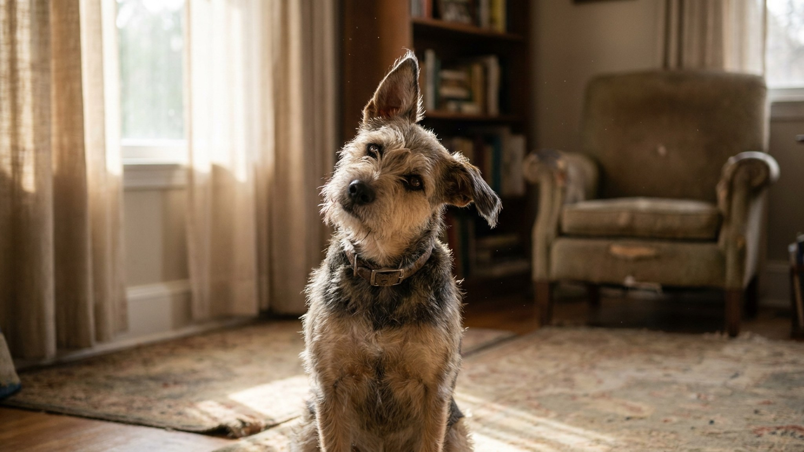

Вы что-то говорите — и собака наклоняет голову набок с таким видом, будто анализирует каждое слово. Это один из самых фотогеничных собачьих жестов, и у него есть несколько реальных объяснений. Слух, зрение, форма морды — всё имеет значение. И есть один тип наклона, который стоит показать ветеринару.
🐾 Не уверены, что это опасно?
Опишите симптом в AnimaLife — AI-ветеринар за минуту подскажет, что в пределах нормы, а когда пора к врачу.
Слух у собак в 4 раза острее человеческого — они слышат частоты от 40 до 65 000 Гц (человек — до 20 000). Но точная локализация звука требует от мозга сравнить сигналы, поступающие в правое и левое ухо. Небольшое угловое смещение головы меняет временну́ю задержку между ушами — и мозг получает более точные данные о направлении источника.
Вот почему наклон чаще появляется, когда звук незнакомый, тихий или непонятный: вопросительная интонация вашего голоса, звонок телефона за стеной, далёкий шорох. Это не просто рефлекс — это активная работа слухового анализатора.
Исследование, опубликованное в Animal Cognition в 2021 году, обнаружило, что собаки, которые лучше запоминают названия игрушек («принеси мячик»), наклоняют голову значительно чаще при команде, чем другие собаки. Это косвенно подтверждает: жест связан с активной обработкой смысла, а не только с локализацией звука.
У собак с выраженной мордой — боксёры, лабрадоры, немецкие овчарки — нос и щёки частично перекрывают нижнюю часть поля зрения. Когда собака смотрит на человеческое лицо снизу вверх, она может наклонить голову, чтобы убрать морду из «мёртвой зоны» и лучше видеть ваши глаза и рот.
Это подтвердилось в исследовании Стэнли Корена (2013): брахицефальные породы с приплюснутой мордой (мопсы, бульдоги, французские бульдоги) наклоняют голову значительно реже, чем длинноносые породы. Их морда меньше мешает обзору, поэтому необходимость в наклоне отпадает.
Для собаки мимика хозяина — важный источник информации. Чтение выражения лица помогает ей понять, что происходит: вы довольны, расстроены, встревожены? Наклон головы — попытка считать эту информацию точнее.
Честная причина, которую часто упускают: собака обнаружила, что наклон головы вызывает у хозяина реакцию — улыбку, умиление, «ах ты мой хороший!». Это само по себе является наградой. Со временем поведение закрепляется — собака научилась, что «наклон головы = внимание и ласка».
Это не манипуляция в негативном смысле — это нормальное оперантное научение. Собака просто выяснила, что работает. Именно поэтому некоторые породы и особи наклоняют голову чаще других: у них это поведение было подкреплено больше раз.
Частота и выраженность наклона головы отчасти зависит от морфологии:
Обычный «коммуникативный» наклон — ситуативный: собака наклонила, получила информацию, выпрямилась. Насторожиться стоит, если наклон:
Такие признаки могут указывать на проблемы с вестибулярным аппаратом или ухом — это повод обратиться к ветеринару без промедления, а не ждать, пока «само пройдёт».
Простой тест: посмотрите на собаку, когда она отдыхает в тишине, ни на что не реагирует. Если голова при этом прямая — значит, всё в порядке, жест ситуативный. Если в состоянии покоя голова всё равно склонена в одну сторону — запишите короткое видео и покажите ветеринару на ближайшем визите.
🐾 Питомец ведёт себя странно?
AnimaLife расшифрует поведение кошки и собаки и подскажет, что делать. Попробуйте бесплатно прямо в мессенджере.
🐾 Понравился разбор?
Подпишитесь на канал — каждый день разбираем по одному тревожному симптому у кошек и собак: что в пределах нормы, а когда пора к врачу. Подпишитесь, чтобы не пропустить разбор, который может спасти здоровье вашего питомца.
Если вам нравится этот жест и вы хотите, чтобы собака делала его чаще — просто хвалите её каждый раз, когда она наклоняет голову в ответ на вашу речь. Со временем она будет делать это охотнее. Ничего вредного в этом нет.
Наклон головы — маленькое окно в то, как собака воспринимает мир. Она не просто смотрит на вас. Она слушает, анализирует и пытается понять. Это и делает её собакой.